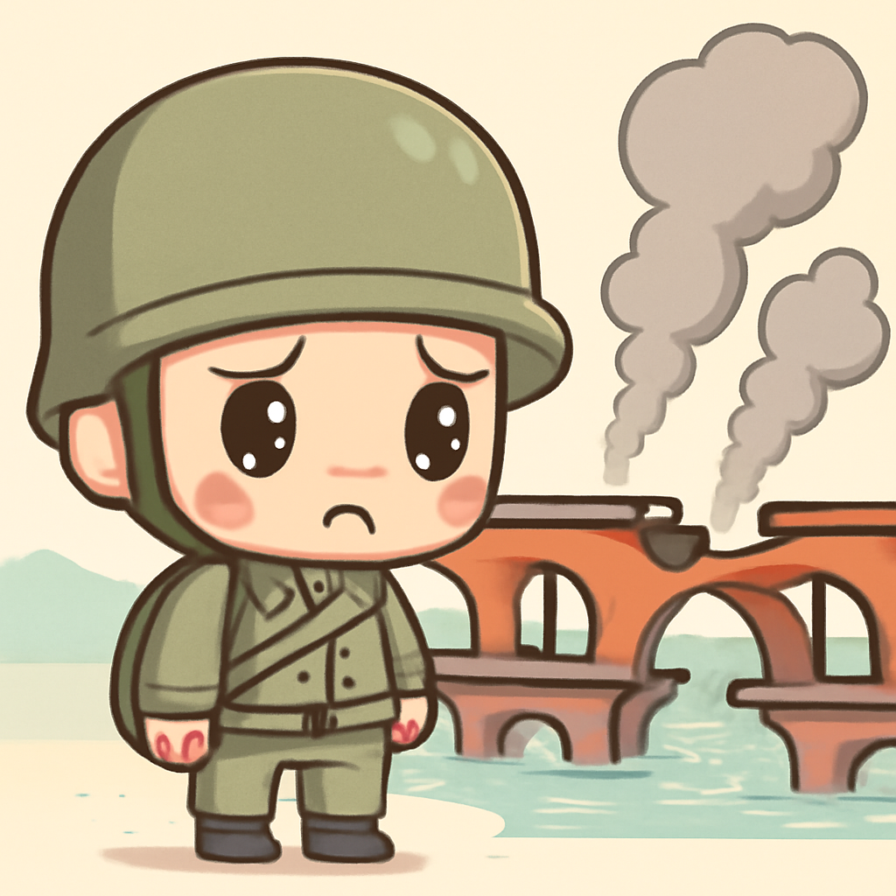
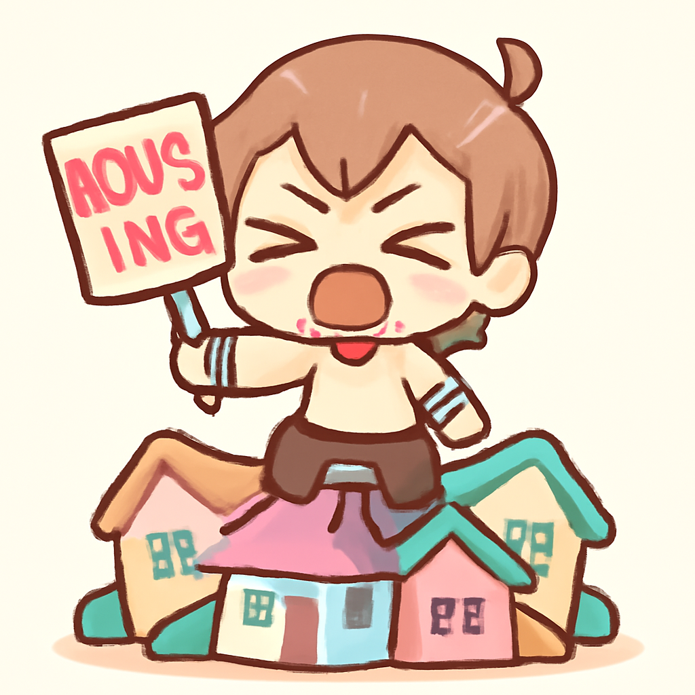
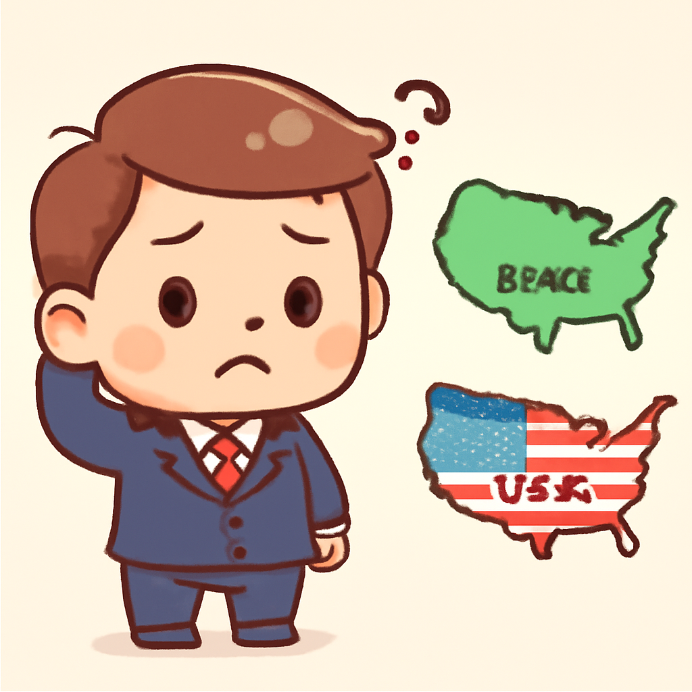

其一 · 烏克蘭基輔 · 俄國攻擊主要橋樑
俄軍再次空襲基輔重要交通樞紐

在烏克蘭基輔，俄軍再次攻擊了北方橋樑，這是對該市交通系統的一次重大打擊。這次襲擊不僅影響了通勤者的日常生活，也加劇了當地的緊張氣氛，讓人不禁想：這些橋樑還能撐多久？
🔗 原始新聞 ↗
2026-10-04 · 以古觀今，以笑抗愁
俄軍再次空襲基輔重要交通樞紐

在烏克蘭基輔，俄軍再次攻擊了北方橋樑，這是對該市交通系統的一次重大打擊。這次襲擊不僅影響了通勤者的日常生活，也加劇了當地的緊張氣氛，讓人不禁想：這些橋樑還能撐多久？
🔗 原始新聞 ↗
法國學生持續抗議，要求改善教育質量
法國巴黎的學生們因教育標準和教師短缺問題展開了激烈抗議，735所學校受到影響。這樣的抗議行動不僅讓校園陷入混亂，也讓政府不得不重新思考教育政策，估計這場抗議會讓許多官員心頭大壓！
🔗 原始新聞 ↗
西班牙各地舉行抗議，呼籲解決住房問題

在西班牙，超過五十場抗議活動因政府未能通過緊急住房立法而爆發。民眾對高漲的房價和租金感到憤怒，這次抗議顯示了公眾對住房保障的迫切需求，真是讓人想起了“有人在喊，不要再租房了！”
🔗 原始新聞 ↗
G7國家協調釋放石油，應對價格波動
在華府，G7國家宣布將釋放數百萬桶石油和柴油，以防止市場價格進一步飆升。這一措施旨在應對美國柴油出口禁令的潛在風險，讓全球能源市場稍微鬆了一口氣，但也讓不少石油商心裡七上八下。
🔗 原始新聞 ↗
巴西選舉期間指責美國干預內政

在即將舉行的總統選舉前，巴西指控美國對選舉進行干預，成為兩國關係中的一個新焦點。這場選舉涉及到許多主權和安全的議題，讓人憂心忡忡，難道美國又要當“好心大哥”了嗎？
🔗 原始新聞 ↗